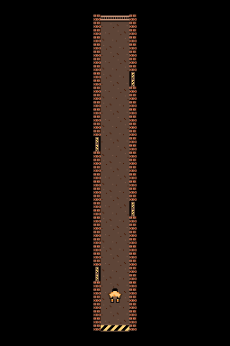
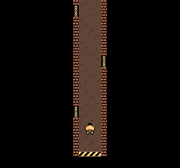
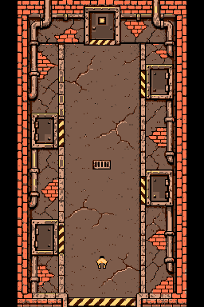

Future corridor art reference
The preferred direction is a thin corridor seen from above, surrounded by black, following the DW3 reference. Character F is preferred for now; all alternatives remain available. Implementation is deferred behind earlier backlog work.
Preferred thin top view · 256 × 384

Thin corridor tiles · Tile and placement data

Current character preference: F · 16 × 16


Checked view · 256 × 240

Nine visible colors. Eight hardware sprites, at most four per scanline. Both versions retain exact NES constructions.
Earlier wide basement study · perspective rejected
Retained for material and tile reference. The preferred composition is the thin top view above.

Wide corridor tiles · Tile and placement data